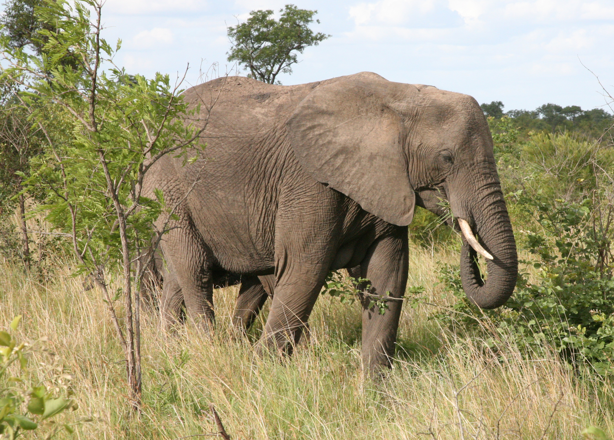

This is a African Bush Elephant. It is the largest land animal!
Basic Information Of African Bush Elephant
- It is the largest living terrestrial animal, reaching up to 3.96 m in height and 10.4 t in weight.
- It is distributed across 37 African countries and inhabits various habitats, such as forests, grasslands, woodlands, wetlands and agricultural land.
-
It is a herbivore that consumes up to 350 pounds of vegetation per day, including grass, leaves, bark, fruit, and foliage.
- It has large ears that are shaped like Africa and can grow up to 2 m. The ears help regulate body temperature and communicate.